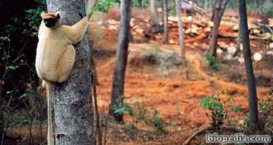

Resumen
Se calcula que existen unos 30 millones de especies animales y vegetales distintas en el mundo. De
todas ellas, la Unión Internacional para la Conservación de la Naturaleza (UICN) cifra en 1.000 las que
se encuentran en peligro de extinción y en 17.000 las amenazadas. Para el 2020 la diversidad de
especies se puede haber reducido en un 33%.
Animales y plantas están amenazados por la alteración de los espacios naturales, que se emplean para
construir viviendas, carreteras, etc. La caza deportiva o comercial y el tráfico ilegal de especies
son causas que también hacen peligrar a la fauna y a la flora. Muchas de nuestras mascotas o plantas son
fruto de este comercio que, según el Fondo Mundial para la Conservación de la Naturaleza (WWF),
produce más de 300 mil euros anuales de beneficio.
¿Animales en Peligro de Extinción?
Los animales en peligro de extinción, son las consecuencias que dejan las actividades del hombre con
todas sus actuaciones; ya que éstos son quienes han ido pagando las consecuencias de la destrucción
del ecosistema; haciendo que diversas especies vayan muriendo y con ello vaya deteriorándose de igual
modo la cadena trófica de todos los seres.
En pleno Siglo XXI la sociedad sigue desconociendo los animales en peligro de extinción que
actualmente se encuentran amenazados en nuestro planeta. Las acciones que provocan un deterioramiento de
la biodiversidad están provocadas por factores humanos y naturales. El mayor impacto negativo y el que
sitúa los animales en peligro de extinción es el provocado por el ser humano. El cambio climático,
la caza furtiva, la destrucción de su hábitat son algunas de las acciones que provocan esta situación.
¿Qué significa que un animal este en peligro de extinción?

Significa que hay tan pocos de su tipo que podrían desaparecer por completo del planeta. Las
especies amenazadas son vulnerables a factores tales como la pérdida del hábitat, la caza, las
enfermedades y el cambio climático. Por lo general, las especies en peligro de extinción, son aquellas
cuya población está en declive o en un rango muy limitado.
La tasa actual de extinción es probablemente mucho mayor que la tasa esperada, existiendo muchas
especies que se extinguen antes de ser, incluso descubiertas.